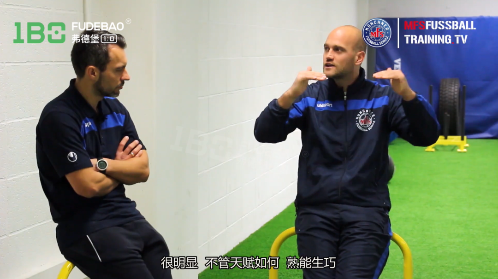
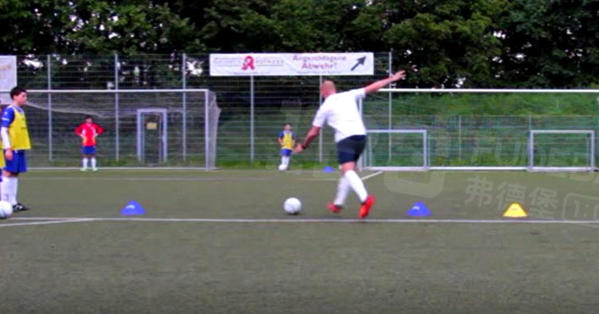
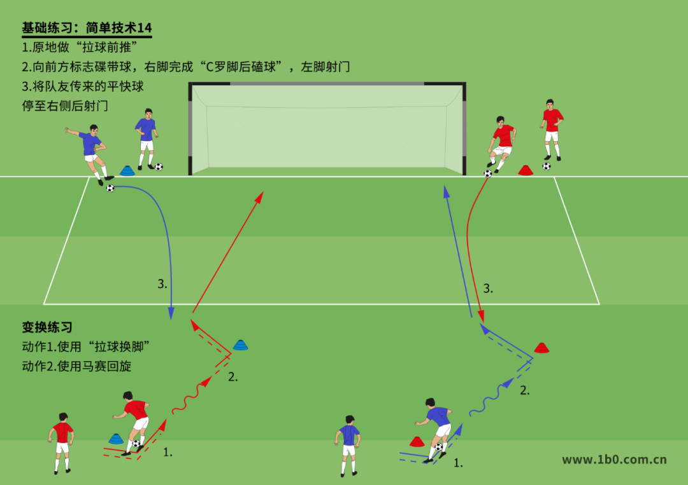
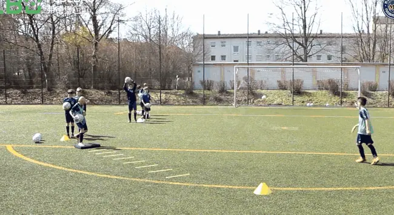
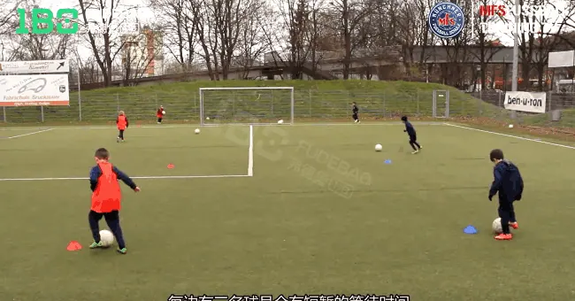
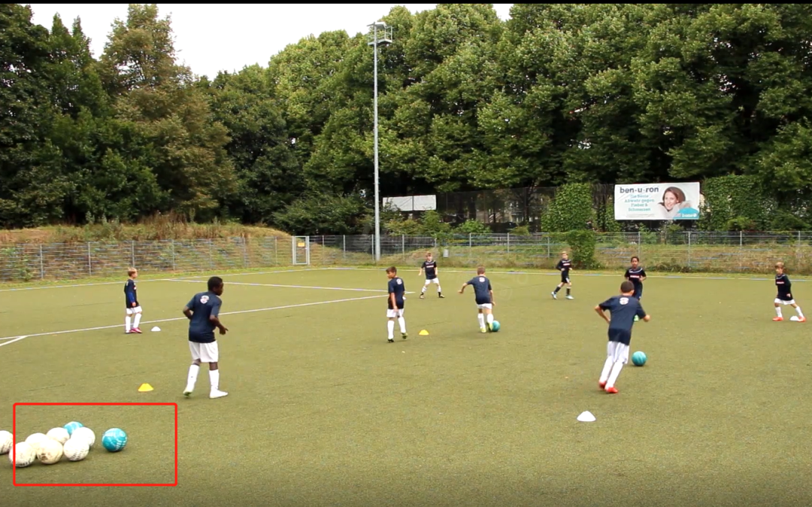

在慕尼黑足球学校（以下简称MFS）的青少年足球训练体系中，训练效率的提升是非常重要的一环。
拿笔者小时候训练的经历来说吧，十几个人在一个球门前，第一名球员带球绕杆之后射门，捡球之后再到后面排队。
这样的训练方式效率着实低下，对于单个球员来说，大部分时间都在捡球和等待，两次练习之间的间隔甚至是2分钟。

足球训练，尤其是技术训练，是一个熟能生巧的过程，因此训练效率提升的重要性是不言而喻的，且训练效率低意味着孩子等待时间长，如此更容易引发注意力不集中的问题，今天就从几个方面入手，给大家说一说提升训练效率的方法。
回到开头举的这个例子，最简单的提升效率方法就是安排两个球门，每个球门前设置两个射门点，球员分组进行练习，减少排队等待人数。
但我们还应注意的是，两个球门应该并排摆放而不是摆在球场的两端，这样教练只要朝一个方向看，就可以看到所有的孩子，而不用来回转身，可以更及时发现孩子的错误，也更容易管理训练课上的纪律。

球门应该尽量放在有场边护网的一侧，这样可以有效提升捡球的效率。
此外，我们可以引入二次射门的机制，进一步提升效率。
球员完成射门后，横竖是要去球门里捡球的，我们可以将球员来回捡球也利用起来，顺势在球门旁设置一个传球点。
还是拿开头的带球绕杆举例，球员完成绕杆后用自己脚下的球完成第一脚射门，再接传球点队友传球完成第二脚射门。
完成两次射门后去球门里捡两个球站在传球点稍作等待，然后将球传给完成练习准备第二脚射门的队友，再带一个球去队伍后面等待。
觉得文字描述不够清楚也可参考下面这个训练单元：
原文含嵌入视频，本地未保存。

如此，通过设置球门旁传球点以及二次射门，不仅仅是将射门练习的次数翻倍，更能有效利用球员捡球的来回，将传球、停球也融入到枯燥的技术或是协调练习中去，让整个训练结构轮转起来。
经过MFS测试，合理的分组加上引入二次射门后，球员两次练习间的平均等待时间可以控制在20秒以内。
再发散一下思维，传球点处可以要求球员左右脚交替传球，两脚射门也要用左右脚交替完成，提升球员逆足能力。
再再发散一下，传球点可以传地滚球，也可以传半高球，甚至可以掷界外球，或是高高将球抛起。在不同练习中不断替换传球方式，球员处理各种来球的能力也能随之得到提升。

有的教练会有疑问，我的孩子年龄小，基本功不过关，加入传球和二次射门怕他们停不住球，反而会耽误时间，甚至引发后面排队等待球员的不满。
对于这种情况，我们可以参考下面这个方法：

让球员将等待时间利用起来，交给他们一些小任务，例如上面的原地练习动作技巧，或者可以是原地将球抛起练习下坠球停球等。两组训练中场地变换布置的过程也可以用这种形式填补等待时间。
还有，我们在分组前就应该考虑到球员水平的问题，水平相当的球员分在一组，这样水平好的球员不会觉得水平差的球员拖后腿，水平一般的球员也不会因此有压力。每组按照自己的节奏进行练习，提升效率。
当然，我们不要告诉球员我们是根据水平进行分组的，可以另外设一个名目进行分组，否则会打击到水平较差球员的自信。
对于那些不在球门前进行的训练单元，比如传球练习或者抢圈练习，我们要设置合适的场地大小，安排合适的人数，同时要建立流畅的轮转机制

重要的是教练应该准备足够的备用球，聚拢在教练旁边，一旦球员将球传丢，教练直接把备用球传进场内继续练习。
更多的可以参考我们之前发布的传球练习视频
关于训练效率的提升，希望这篇文章对你有所帮助，如果有更好的方法，欢迎私信或者留言分享交流。

文字与图片版权归各自权利人所有；排版根据抓取内容整理。